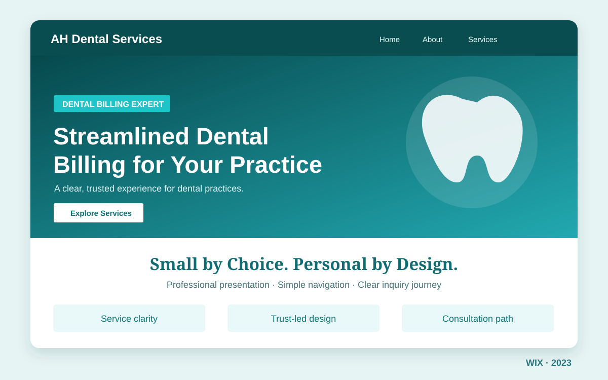

01 · Previous client
Quality work deliveredA previous dental-sector client was happy enough with my website work to recommend me.

Healthcare · Dental billing · 2023
A Wix website that began with a recommendation and inspired another one.
The story behind the build
In 2023, I had completed a website for someone working in the same dental-services niche. The client loved the work and recommended me to AH Dental Services. That introduction became another opportunity to demonstrate what thoughtful website design and dependable service could do.
The task was to present a specialist dental billing business in a professional, approachable way. Using Wix, I organized the services and supporting information into a clear journey, with a welcoming first impression and an easy path to consultation.
After completing the project, AH Dental Services was pleased with my work and referred another person to me. It was a reminder that the strongest proof of quality is sometimes the people who are willing to recommend you.
What made this project special
01 · Previous client
Quality work deliveredA previous dental-sector client was happy enough with my website work to recommend me.
02 · New introduction
AH Dental ServicesThe referral led to a Wix website project for a dental billing business.
03 · Another recommendation
Trust carried forwardAH Dental Services then introduced my services to another person.
The challenge
The design solution
The outcome
The referral is the result I can speak to. I have not attached invented revenue, traffic or conversion claims to this project.
Project presentation
This privacy-safe illustration reflects the visual direction of the original site without sharing the client's website address or contact details.
Illustrated portfolio cover, not a screenshot of the live website.
Wix website design